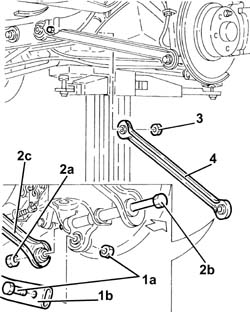
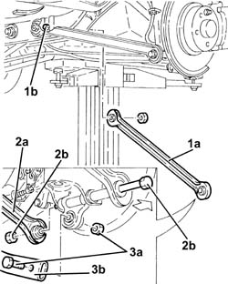
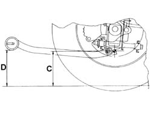
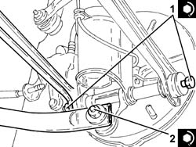

4420B16 FRONT WISHBONE - R R
- Path
- Procedures > 44 SUSPENSION AND WHEELS > 4420 REAR SUSPENSION > 4420B REAR SUSPENSION WISHBONES > 4420B16 FRONT WISHBONE - R R
- Kind
- repair procedure (removal / refitting; the operation number is the code)
- Applies to
- all engines; all production periods
- Interactive page
- https://sloeber94.github.io/elrnDB-aGt/en/#/125001454
Applies to: all engines; all production periods
 Removing
Removing
 Refitting
RefittingPosition the vehicle on the ramp
Proceed with removal
Op. 4450B11 TYRE INFLATION VALVE CAP - REPLACE
1. Undo bolt (1a) securing rear suspension longitudinal tie rod (1b) to the steering knuckle.
2. Undo the nut (2a) and withdraw bolt (2b) as far as necessary to disconnect front wishbone (2c) from the damper.
3. Undo the nut of the bolt securing the rear suspension front wishbone to the rear suspension beam.
4. Remove the rear suspension front wishbone.

Applies to: all engines; all production periods
Refitting
Removing1. Refit the rear suspension front wishbone (1a) and secure to the beam by doing up screw (1b) of the retaining bolt.
2. Connect front wishbone (2a) to the damper and secure using the bolt (2b) without tightening it.
3. Screw in bolt (3a) securing rear suspension longitudinal tie rod (3b) to the steering knuckle without tightening.

Applies to: all engines; all production periods
1. Place the suspension in a geometric configuration so that the difference in height between dimension D-C is 13 mm.

Applies to: all engines; all production periods
Tighten the bolt securing the rear suspension front wishbone to the rear suspension beam to the specified torque.
 | Fastening | Component | Ø | Value (daNm) |
|---|---|---|---|---|
- | Bolt | REAR SUSPENSION FRONT WISHBONES | M12 | (Rear suspension crossmember side) 6.8 ÷ 8.3 |
1. Tighten the bolt connecting the track control arms to the shock absorber to the recommended torque.
| Fastening | Component | Ø | Value (daNm) |
|---|---|---|---|---|
1 | Bolt | REAR SUSPENSION FRONT WISHBONES | M12 | (Rear wheel hub stub axle side.) 11.1 ÷ 13.5 |
2. Tighten the nut securing the rear suspension longitudinal strut to the hub stub axle to the recommended torque.
| Fastening | Component | Ø | Value (daNm) |
|---|---|---|---|---|
2 | Bolt | REAR ANCHORAGE ROD | M12 | (Rear wheel hub stub axle side.) 11.1 ÷ 13.5 |

Applies to: all engines; all production periods
Proceed with refitting
Op. 4450B11 TYRE INFLATION VALVE CAP - REPLACE.
Remove the car from the ramps.
Proceed with refitting
Op. 4450A40 REAR WHEEL GEOMETRY - CHECK USING OPTICAL EQUIPMENT.
Topics linked from this page (2)
- 4450A40 REAR WHEEL GEOMETRY - CHECK USING OPTICAL EQUIPMENT
- 4450B11 TYRE INFLATION VALVE CAP - REPLACE